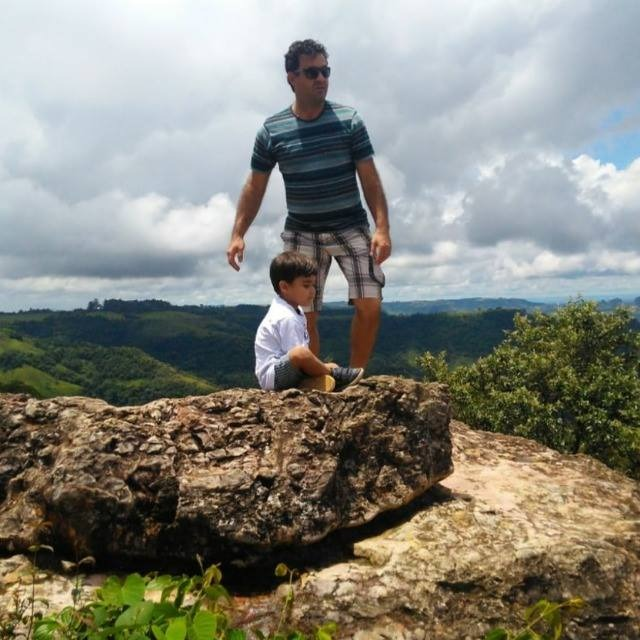

Arlindo da Silva Lourenço, doutor em Psicologia, trabalhou
mais de 24 anos na Administração Penitenciária em São Paulo; atualmente é professor na Universidade Federal
de São Carlos, campus de Sorocaba e da Universidade do Estado de Minas Gerais, campus de Frutal.
Não tenho muitas fotos, não gosto. Vou lhe enviar uma ou duas que gosto. Meu email:
arlindolourenco27@gmail.com e arlindolourenco@alumni.usp.br. também quase não entro no Facebook, mas estou
lá como Arlindo Lourenço, tem uma foto minha lá. Não gosto do Instagram e não me costumo com outras redes
sociais, Vanderlei.
Juliana Torres é Professora de Direito Ambiental,
Advogada ambientalista no Brasil e em, parceria em Portugal, e Mediadora Judicial.
Graduada e Mestre em Direitos das Relações Sociais pela PUCSP, onde lecionou na graduação e pós-graduação.
É Diretora da ABA- Arujá ( Associação Brasileira de Advogados). Membro da APRODAB (Associação de Professores
de Direito Ambiental Brasileira)
e de diversas Comissões na OAB-SP( Direito Sistêmico, Mediação e Conciliação, Direito Digital, Relações
Internacionais e OAB Vai à Faculdade).
Fundadora do Comitê de Justiça Alimentar e Integrante de Coletivos como o Fórum Paulista de Soberania e
Segurança Alimentar e Nutricional,
Fórum de Parques e Áreas Verdes e os Entregadores Anti-fascistas.